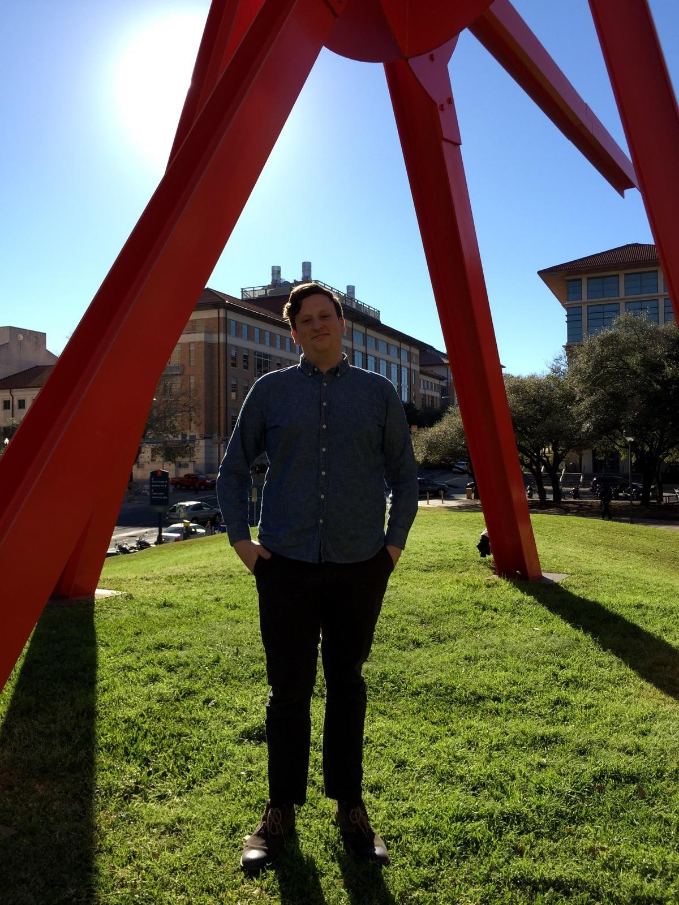

An independent and extracurricular chorus at the University of Texas, Collegium Musicum is committed to bringing outstanding choral music to audiences both on and beyond our campus. We are one of only a few independent student-run choirs at UT, and offer one of the widest ranges of repertoire of any of the university's ensembles, spanning music from the Middle Ages to the twenty-first century.
Unlike the curricular choruses, whose membership depends on class schedules and choice of major (and on tuition!), Collegium is open to singers all across campus, regardless of major. Our singers are undergraduates and graduates, studying the humanities, the sciences, business, medicine, and of course, music. Collegium is committed to excellence in performance, and sets a high standard in its audition process. In this way, we are able to offer a professional choral opportunity outside the confines of UT's Butler School of Music. Singers in Collegium Musicum may keep their membership indefinitely once they join, and most stay with the ensemble year after year.
What We Do
A mixed (satb) a cappella chorus of about twenty-eight to thirty-two singers, Collegium Musicum focuses on chamber choral repertoire of particular historical or musical significance. A portion of each concert program is dedicated to early music: we have sung, among many others, the works of Monteverdi, Busnois, Tomkins, Finck, and music from as early as the twelfth century. From more recent periods, our repertoire encompasses secular works, motets, folk songs, spirituals, and glees by luminaries such as Schütz, Elgar, Homilius, Rheinberger, and Michael Haydn. Collegium proudly performs a wide variety of twentieth and twenty-first century choral music, including works by Kodály, Gjeilo, Polifrone, Quick, and P.D.Q. Bach. The choir performed a world premiere by the eminent young composer Caroline Mallonée in 2012. In addition, Collegium sponsors the New Choral Music Initiative, a competition for the composition of new choral music by students at the University of Texas at Austin, performing one new work each year.
Collegium rehearses Thursday and Sunday evenings, from 6:00 to 8:30 pm, in the Music School's choral rehearsal room (mbe 2.106, part of mrh). We perform at least two concerts each year, sometimes in collaboration with other performance groups on campus.
Our History
Collegium Musicum was founded in 2010 by Bram Wayman, its first director and a graduate student in music composition, and Corinne McLeod. Originally the Renaissance Collegium Musicum, the chorus grew out of the sec's Madrigal Dinner Committee, which has performed an annual madrigal dinner at ut since the late 1970s. After its first year under the umbrella of the sec, the chorus became its own student organization in Fall 2011.
Listen To Us
These recordings of Collegium Musicum represent our typical repertoire. We hope you enjoy them! If you like what you hear, please subscribe to our public mailing list by sending us an email with the subject line "Subcribe".
Here you can read about the audition process. If you'd like to be notified when auditions open, Email us and ask to be put on the audition mailing list.
We welcome any ut student who is interested in choral singing to audition for Collegium Musicum. Auditions are held at the beginning of each academic year. The audition, which lasts ten minutes, consists of:
Some range and vocalization exercises.
A brief sight-singing exercise. Please note that you must be able to read music for your audition to be considered.
Optional: A song or excerpt from a song, about two minutes in length, from any genre. Auditionees sing thier songs a cappella, and do not need to memorize them.
Collegium Musicum holds auditions at the beginning of each academic year and occasionally at the beginning of the Spring semester. Membership is offered indefinitely if you are admitted. To read more about membership in Collegium, please see our About section.
How to sign up for an audition
Auditions are scheduled in ten-minute slots over the course of a few days. Time slots are claimed on a first-come, first-serve basis. You may sign up by:
Emailing us with the link above with a set of any and all desired times.
Attending our info session, which is held prior to auditions at the beginning of each semester.
Visiting us at major extracurricular fairs, such as Party on the Plaza and the Graduate Student Alliance fair.
Signing up outside the audition room during auditions (the electronic sign-up sheet will be available). "Walk-ins" may sign up for any available slot.
If you cannot make any of the audition times but are still interested in trying out, please email us using the link above and describe your situation. Collegium Musicum guarantees an audition to every interested singer.
At your audition
Please arrive for your audition at least ten minutes early. Outside the audition room, there will be an information card for you to fill out prior to your audition.
Collegium Musicum auditions and rehearses in the Butler School of Music. Signs will be posted to help you find the audition room, and there is a large building map posted in the main atrium on the ground floor, to the left of the Music Services Center.
Have a question
If you would like to know more about the audition process, membership in Collegium, etc., please Email us.
Directors
Curtis E. White (Assistant Conductor) is a composer and tenor soloist from Houston, Texas. Currently pursuing a Bachelor of Science and Arts in Biochemistry and a Bachelor of Music in Performance from the University of Texas at Austin. He has performed with the University Chorus, Chamber Singers, and Men's Chorus at UT. He currently sings with the UT Concert Chorale under the direction of Dr. Suzzanne Pence, Collegium Musicum under the direction of Bo Young Kang, Amphion Youth Choir under the direction of Steve White, Chorus Austin Symphonic and Chamber Ensembles under the direction of Ryan Heller, the UT Butler Opera Center, and Vox Beata under the direction of Bo Young Kang. Curtis hold's a tenor section leader/soloist position at the University United Methodist Church located on campus. He has studied composition under Dr. Donald Grantham. Currently studies voice under Donnie Ray Albert. He has performed as a chorus member in the operas "The Rose Made Man" in 2015 and "Dialogue of the Carmelites" in 2016. He will be performing the exciting role of Buoso in Puccinni's opera Gianni Schicchi this Fall.

James J. Hall (Assistant Conductor) is a pianist and verdi baritone from San Antonio, Texas, currently pursuing a Bachelor of Science in Chemistry from the University of Texas at Austin. He has performed solo piano for 15 years and has been singing for 5. He studied piano and music theory under many different teachers, the most notable being Dr. Elizabeth Gutierrez. He currently studies voice under Nikita Storojev. He has performed in several solo recitals for both voice and piano and has been singing with Collegium Musicum for 2 years. This is his first year as Assistant Conductor.
New Choral Music Initiative
The New Choral Music Initiative is an annual contest, sponsored by Collegium Musicum, for the composition of new choral music. It is open to all students at ut. The contest is held each winter, and the winning piece is placed on Collegium's spring repertoire.
In the new music world, the opportunity for a composer's work to be put in a concert repertoire is extremely rare. Collegium believes strongly in the fostering of new choral music, however, and is dedicated to committing the same amount of rehearsal time and focus to new pieces as to any other music. Likewise, winning composers should expect to see their piece placed in the same performance context as the other pieces on the program. Winning composers will have their piece rehearsed thoroughly and professionally, and it will be performed on every concert Collegium gives that season.